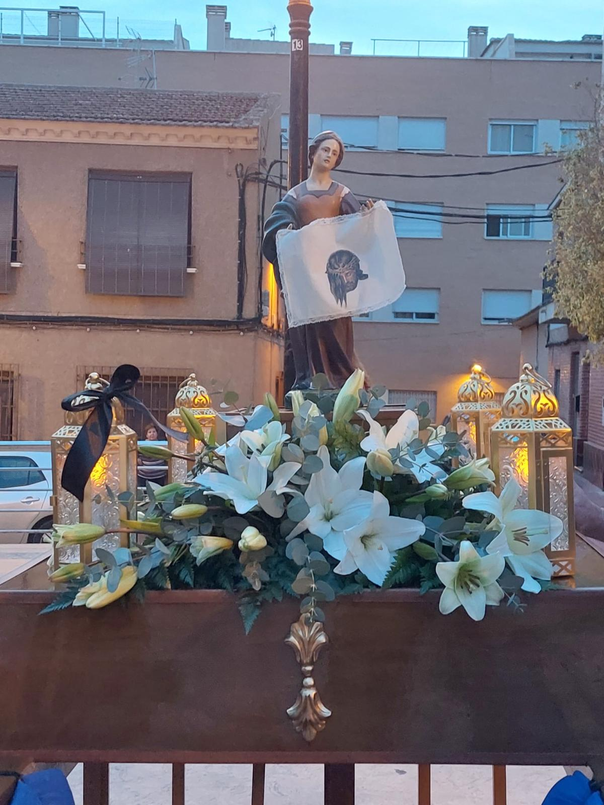

Mujer Verónica
Esta preciosa imagen es una auténtica imitación de Francisco Salzillo.
La Verónica es una imagen de talla y fue bendecida en el año 2024.
Luce un precioso paño confeccionado por la modista de nuestro pueblo, María Marín Espín.
El trono fue construido por la Hermandad de la Santa Mujer Verónica de La Ñora.
